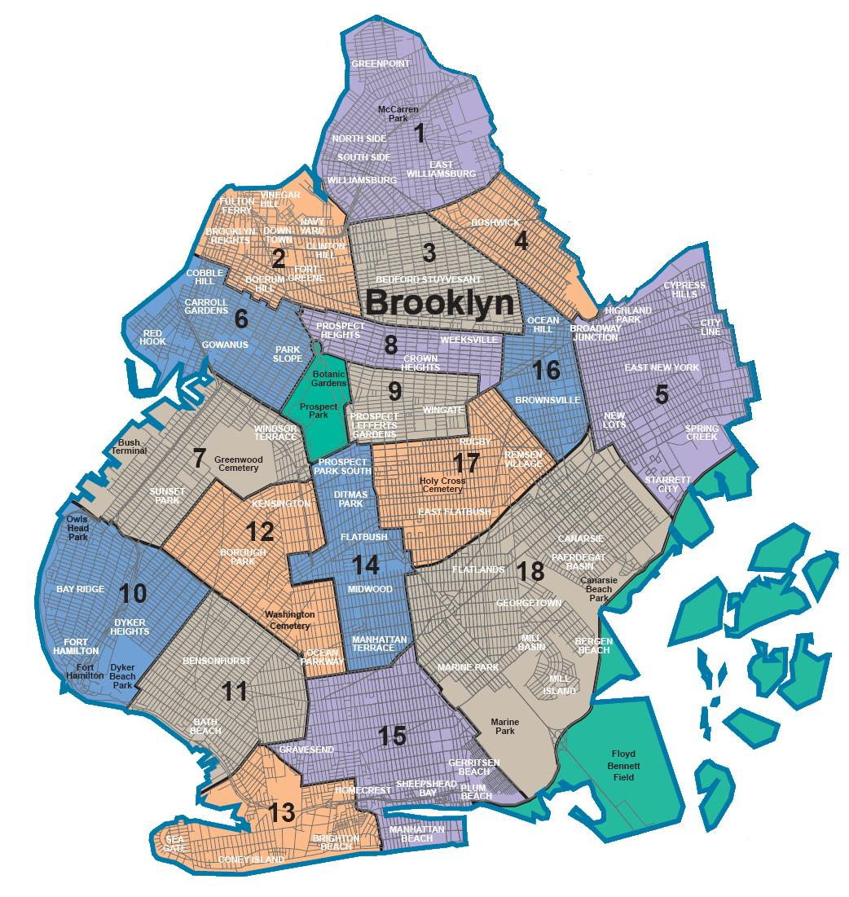
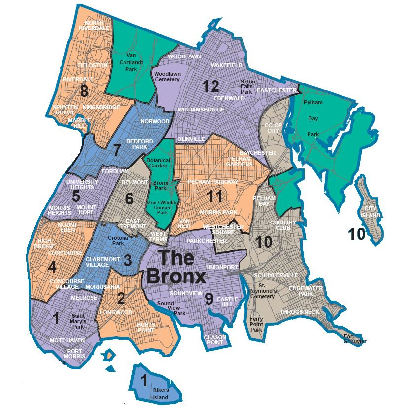
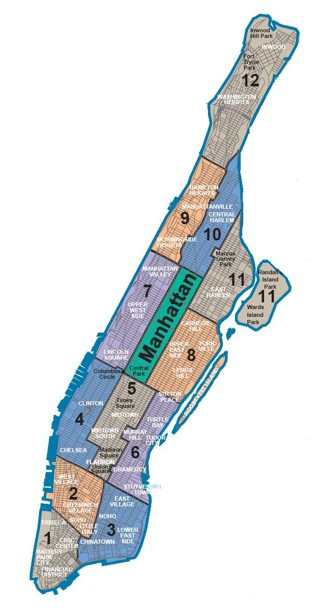
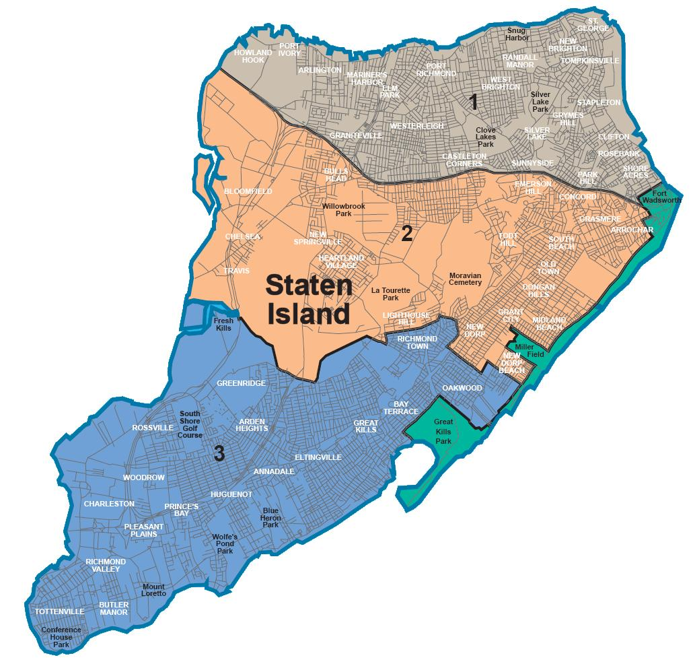
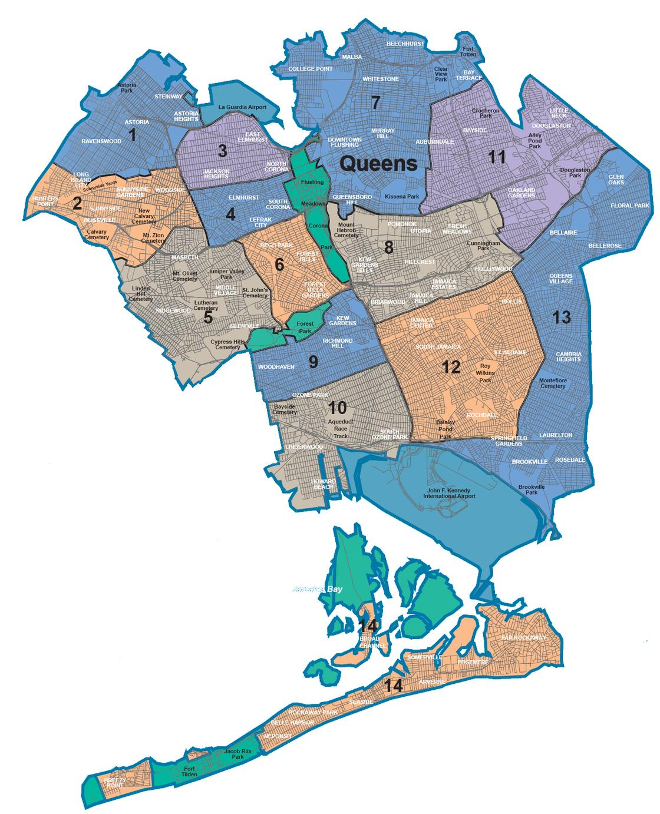

Brooklyn is one of the five boroughs of New York City and is the most populous of them all. It is known for its diverse and vibrant culture, which is reflected in its neighborhoods, such as Williamsburg, Park Slope, and Bed-Stuy. Brooklyn is also home to numerous attractions, including the Brooklyn Bridge, Prospect Park, and the Brooklyn Museum. The borough is a hub for creativity and is known for its thriving arts scene, as well as its trendsetting fashion, music, and food cultures. With its iconic brownstones, beautiful waterfront, and lively streets, Brooklyn is a must-visit destination for anyone visiting New York City.
The Bronx is one of the five boroughs of New York City, located north of Manhattan. It is known for its rich history, vibrant culture, and diverse communities. The Bronx is home to numerous landmarks, including Yankee Stadium, the Bronx Zoo, and the New York Botanical Garden. It is also home to many institutions that celebrate the city's cultural diversity, such as the Bronx Museum of the Arts and the National Museum of the American Indian. The Bronx is famous for its contributions to hip-hop music and is the birthplace of many prominent artists, including Grandmaster Flash and Fat Joe. With its unique mix of urban energy and natural beauty, the Bronx is a must-visit destination for anyone exploring New York City.
Manhattan is the most densely populated of the five boroughs of New York City, and is known as the economic and cultural hub of the city. It is home to some of the world's most iconic landmarks, such as the Empire State Building, Times Square, and Central Park. Manhattan also boasts a world-class dining and shopping scene, as well as numerous museums and galleries, including the Museum of Modern Art and the Metropolitan Museum of Art. With its towering skyscrapers, bustling streets, and diverse neighborhoods, Manhattan is a must-visit destination for anyone who wants to experience the fast-paced energy and excitement of New York City.
Staten Island is the southernmost and least populated of the five boroughs of New York City, located southwest of Manhattan. It is known for its beautiful beaches, parks, and historic landmarks, including the Staten Island Ferry, the Conference House, and the Jacques Marchais Museum of Tibetan Art. Staten Island is also home to the famous Snug Harbor Cultural Center, which houses numerous museums, galleries, and gardens. The borough is a peaceful retreat from the hustle and bustle of the city, and is a great place for hiking, biking, and outdoor activities. With its stunning views of the New York Harbor and a unique small-town charm, Staten Island is a hidden gem worth exploring.
Queens is the largest of the five boroughs of New York City, located east of Manhattan. It is known for its cultural diversity, beautiful parks, and landmarks, such as Citi Field, the Unisphere, and the New York Hall of Science. Queens is also home to several vibrant neighborhoods, including Astoria, Long Island City, and Flushing, which offer unique dining, shopping, and entertainment options. The borough is a cultural mecca, with museums, performance venues, and festivals that celebrate the city's diverse communities. Queens is also known for its stunning beaches, such as Rockaway Beach and Jacob Riis Park, which offer a great escape from the city's summer heat. With its dynamic energy and a wide range of attractions, Queens is a must-visit destination for anyone exploring New York City.
